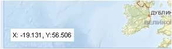

Панель координат курсора
В левом нижнем углу рабочего окна карты находится панель координат курсора.

На ней отображаются географические координаты (в целых и десятичных долях градусов) – X,Y текущего положения курсора мыши в рабочем окне карты. С помощью этой панели определяется координатное местоположение любого объекта на карте.